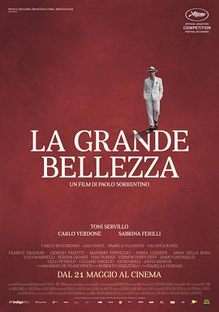

绝美之城 / La grande bellezza
又名：罗马浮世绘(港) / 伟大之美 / 堕毁之国 / The Great Beauty
只听配乐不听对白再当作纪录片看大概能看得进去
作品信息
| 导演 | 保罗·索伦蒂诺 |
| 编剧 | 保罗·索伦蒂诺 / 翁贝托·康塔罗 |
| 主演 | 托尼·塞尔维洛 / 卡洛·维尔多内 / 萨布丽娜·费里利 / 卡洛·布奇罗索 / 雅雅·芙尔特 / 帕梅拉·韋路列斯 / 加拉泰亚·兰齐 / 佛朗哥格拉齐奥西 / 乔治·帕索蒂 / 马西莫·波波利齐奥 / Sonia Gessner / Anna Della Rosa / 卢卡·马里内利 / 塞伦娜·格兰蒂 / 伊凡·弗拉内克 / 弗农·多布切夫 / 达里奥·坎塔雷利 / Luciano Virgilio / Aldo Ralli / 安妮塔·克拉沃斯 / Maria Laura Rondanini / 罗贝托·埃利茨卡 / 伊沙贝拉·法雷利 / 朱利亚·迪·奎里欧 / 洛伦索·吉埃利 / 艾丽莎贝塔·文图拉 / 芬妮·阿尔丹 / Fiammetta Baralla / 朱利奥·布洛吉 / 吉安皮罗·科格诺利 / 米尔科·弗雷扎 / 保罗·索伦蒂诺 / Antonello Venditti |
| 类型 | 剧情 |
| 制片国家/地区 | 意大利 / 法国 |
| 语言 | 意大利语 / 日语 / 西班牙语 / 汉语普通话 |
| 上映日期 | 2013-05-21(戛纳电影节/意大利) |
| 片长 | 141分钟 / 174分钟(加长版) |
| IMDb | tt2358891 |
最后一次看到是 2026-08-12T21:12:35+08:00 · 豆瓣原页